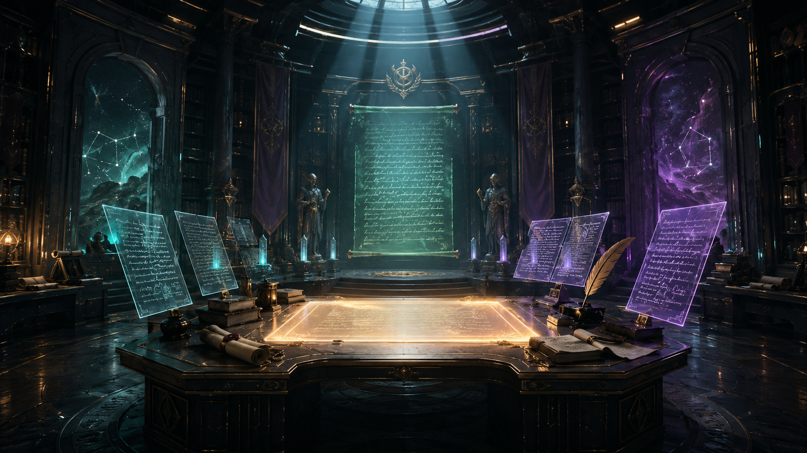
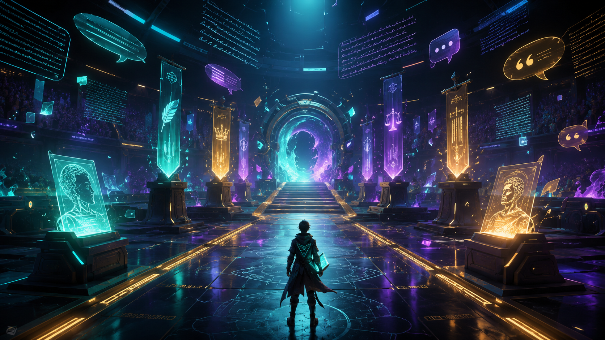

A sealed arena has reopened, and the only way through is to read the clues hidden inside language. Move through three cinematic chambers, survive the timed trials, and reach the final vault with your name on the accuracy report.

Step into the story, survive the chambers, and leave with a final named accuracy report.
Read for rhetorical situation and choices. The passage will remain visible during every question.
Notice how the introduction identifies the rhetorical situation precisely and then states a specific purpose instead of relying on vague verbs like persuade or inform.

Students can compare their introduction to a mentor model before viewing the final performance report.